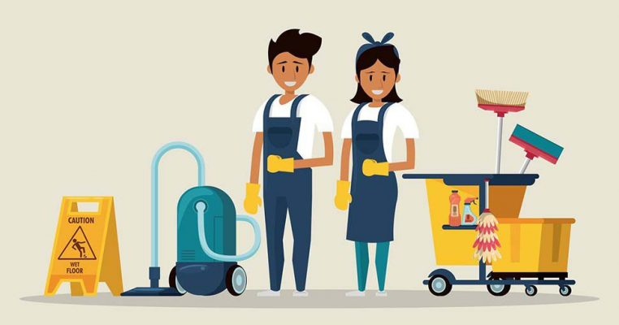

My Portfolio
Project 1: Online Voting
A secure online voting platform built using Java (backend) and SQL (database). It ensures voter authentication, prevents double voting, and provides real-time result tracking. The system follows database normalization principles and uses MySQL/PostgreSQL for data storage. JDBC is used for database connectivity, and Draw.io was utilized for designing UML diagrams.

Project 2: House Keeping Service
A web-based housekeeping service inspired by JupViec.vn, developed with Java, Spring Boot (backend), React.js (frontend), and MySQL for database management. The system supports user authentication, service booking, and real-time order tracking. RESTful APIs are used for seamless client-server communication, and Docker ensures scalability.